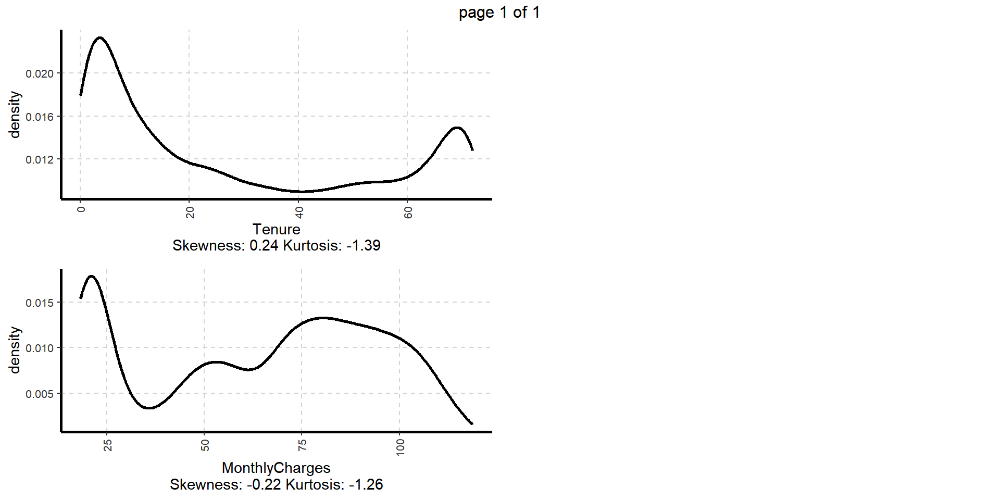
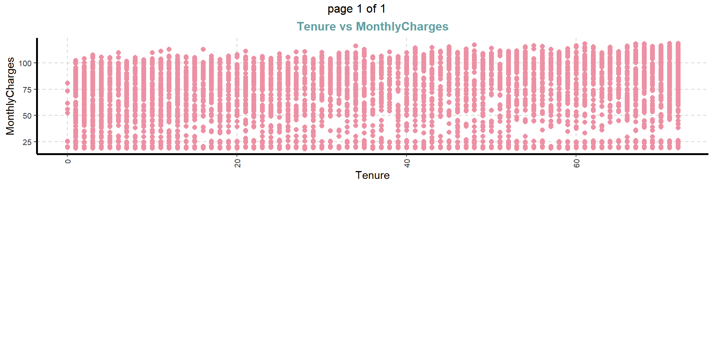

| Name | Income | Yacht |
|---|---|---|
| Alanoud | 45 | 1 |
| Ghada | 50 | 0 |
| Sarah | 55 | 0 |
| Reema | 60 | 0 |
| Ghala | 67 | 0 |
| Rama | 250 | 1 |
| Rayya | 280 | 1 |
| Lama | 320 | 1 |
| Nouf | 370 | 1 |
| Rawabi | 500 | 1 |
Logistic Regression
A Powerful Tool for Classification
Working with Imbalanced Datasets
Dr. Jomana Bashatah
Slides adapted from Carsten Lange
Overview
You will learn about:
What distinguishes data with a binary dependent variable (dummy variables) from data with a continuous dependent variable.
Why a linear regression (Linear Probability Model; LPM) is not suitable for classification (estimating dummy variables)
Why a Logistic Regression function is well suited for classification (estimating dummy variables)
How to interpret the parameters of a Logistic Regression
How to deal with unbalanced datasets
- Downsampling
- Upsampling
- SMOTE
Basics of Logistic Regression
Classification Algorithm:
- Two categories for the outcome variable (analysed in what follows): e.g. Unemployed true or false
- Multiple categories for the outcome variable (not covered here)
- unordered logistic regression
- ordered logistic regression »
A Mock-Up Example to Introduce the Idea
After a few years past graduation, 11 college friends reunite
Financially, some are doing very well and others are doing just OK
The table below shows the yearly salary (in thousands of dollars) and if they own a yacht (
Yacht = 1) or not (Yacht = 0)- Note: the table only contains 10 rows as one of them (Razan) has not arrived yet. We will talk about Razan later on
Using OLS is a Tempting (but bad) Idea
Using OLS is a Tempting (but bad) Idea
An obvious, but sub-optimal as we will see later on, approach is a linear regression
Use OLS to find a regression line with slope \(\beta_1\) and intercept \(\beta_2\) that best approximates the data (minimizing the
MSE)
Linear Function for Binary Classification
The underlying regression assigns continuous numbers to different income levels rather than assign categorical values such as 1 (“yacht owner: yes”) or 0 (“yacht owner: no”)
Therefore, we interpret the continuous predictions from the regression as
probabilitiesfor being a yacht owner (\(\mathit{Prob_i}\))The underlying probability is called the
Linear Probability Model (LPM)The prediction equation would be \(\mathit{prob_i}\) = \(\beta_1\) \(\mathit{Inc_i}\) + \(\beta_2\)
The prediction equation from the LPM can be used to predict the probability of a person being a yacht owner based on their income.
- Whenever the outcome variable (the probability) is greater than 0.5, we predict “yacht owner: yes”, otherwise, “yacht owner: no”
Example Calculations
\(\mathit{prob_i}\) = \(\mathit{0.0023}\) \(\mathit{Inc_i}\) + \(\mathit{0.1418}\)
A person has an income of $75,000
\(\mathit{prob_i}\) = \(\mathit{0.0023}\) * \(\mathit{75}\) + \(\mathit{0.1418}\)
\(\mathit{prob_i}\) = \(\mathit{0.3413}\)
since 0.3413 < 0.5, then we predict “yacht owner: no”
Quick Way to Find a Decision Boundary
1. Find the intersection point between the prediction line and the horizontal 0.5 probability line.
2. Draw a vertical line through the intersection point. This line is called a decision boundary.
3. All incomes left of the decision boundary (income smaller than 156) are predicted as “no”. All incomes right of the decision boundary (income greater than 158) are predicted as “yes”.
Why OLS for Classification is a Bad Idea
Note, incomes > $370,000 are predicted with a probability > 100% to be yacht owners(?)
E.g. probability of owning a yacht for an income of $500,000 is 129% (?)
A similar problem can occur with negative probabilities!
A Step-Function as an Alternative to OLS
If we are willing to give up the linearity requirement, we can avoid these problems
A non-linear prediction line can bend for greater income values downwards and thus avoid exceeding 1.
For small income values, the prediction line can bend upwards and thus avoid falling below 0.
Popular Step-Functions (Sigmoid Function)
Since the curve looks like a step of a staircase (first horizontal, then almost vertical, and finally horizontal again), these types of curves are called step-function.
- Scientifically, they are called
sigmoid functions
- Scientifically, they are called
Sigmoid Functions Include
The Hyperbolic Tangent function.
The Arc Tangent function.
The Logistic function .
The Logistic Function
- The Logistic function (confusingly sometimes also called the sigmoid function):
\[ y_i=\frac{1}{1+e^{-x_i}} \]
We use: \(y_i=P^{rob}_{yes,i}\) and \(x_i=\beta_1 Inc_i+\beta_2\) which gives us:
\[ P^{rob}_{yes,i}=\frac{1}{1+e^{-(\beta_1 Inc_i+\beta_2)}} \]
\(\beta_1\) and \(\beta_2\) change slope and position
\(\beta_2\) shifts the curve horizontally
\(\beta_1\) determines the steepness of the step
See: Try it yourself
What Makes the Logistic Function so Special?
compared to other sigmoid (step) functions
Time for some mathematical magic:
Logistic function \(P^{rob}_{yes,i}\) := probability for positive event (e.g. yacht ownership: yes):
\[P^{rob}_{yes,i}=\frac{1}{1+e^{-(\beta_1\cdot x_i+\beta_2)}} \]
. . .
Take the inverse on both sides of the equation:
\[\frac{1}{P^{rob}_{yes,i}}=1+e^{-(\beta_1\cdot x_i+\beta_2)}\] . . .
Subtract 1 on both sides:
\[\frac{1}{P^{rob}_{yes,i}}-1=e^{-(\beta_1\cdot x_i+\beta_2)}\] . . .
Consider that \(-1=-\frac{P^{rob}_{yes,i}}{P^{rob}_{yes,i}}\) and substitute \(-1\) accordingly, we get after simplification:
\[\frac{1-P^{rob}_{yes,i}}{P^{rob}_{yes,i}}=e^{-(\beta_1\cdot x_i+\beta_2)}\] . . .
\(1-P^{rob}_{yes,i}\) equals by definition \(P^{rob}_{no,i}\):
\[\frac{P^{rob}_{no,i}}{P^{rob}_{yes,i}}=e^{-(\beta_1\cdot x_i+\beta_2)}\] . . .
Take again the inverse on both sides:
\[\frac{P^{rob}_{yes,i}}{P^{rob}_{no,i}}=e^{\beta_1\cdot x_i+\beta_2}\] . . .
Take the logarithm on both sides:
\[\ln\left (\frac{P^{rob}_{yes,i}}{P^{rob}_{no,i}}\right )=\beta_1\cdot x_i+\beta_2\]
One More Step: Odds vs Probabilities
The fraction of the yes/no probabilities can be interpreted as \(Odds\) as they are often used in betting.
Example: The probability of getting two heads when flipping two coins is \(P^{rob}_{yes,i}=0.25\).
Consequently, the probability of not getting two heads when flipping two coins is \(P^{rob}_{no,i}=0.75\).
\(Odds\) for 2 Heads compared to not 2 heads is 1 to 3 or 0.33:
\[O^{dds}=\frac{P^{rob}_{yes,i}}{P^{rob}_{no,i}}=\frac{0.25}{0.75}=\frac{1}{3}=0.33\]
Interpretation of the \(\beta s\): Yacht Ownership
\[\ln(O^{dds})=\ln\left (\frac{P^{rob}_{yes,i}}{P^{rob}_{no,i}}\right )=0.02\cdot Inc_i+(-2.7)\]
Model results after running and printing the workflow():
Code
══ Workflow [trained] ══════════════════════════════════════════════════════════
Preprocessor: Recipe
Model: logistic_reg()
── Preprocessor ────────────────────────────────────────────────────────────────
0 Recipe Steps
── Model ───────────────────────────────────────────────────────────────────────
Call: stats::glm(formula = ..y ~ ., family = stats::binomial, data = data)
Coefficients:
(Intercept) Income
-2.68660 0.02448
Degrees of Freedom: 9 Total (i.e. Null); 8 Residual
Null Deviance: 13.46
Residual Deviance: 5.654 AIC: 9.654Interpretation of the \(\beta s\): Yacht Ownership
\[\ln(O^{dds})=\ln\left (\frac{P^{rob}_{yes,i}}{P^{rob}_{no,i}}\right )=0.02\cdot Inc_i+(-2.7)\]
If income increases by 1 ($1,000) the logarithm of the odds increases by 0.02 (2.5%).
Since change of a logarithm is a relative change (percentage):
If income increases by 1 ($1,000) the odds increases by 2% (0.02). (careful with the results because data were made up and N is too small!)
Razan Arrives: Who Is Right?
Razan earns $150,000. Does she own a yacht?
Linear Probability Model
\(Prob = 0.0023 \times 150 + 0.1418 = 0.49\) → No
Logistic Regression
\(\ln(Odds) = 0.02448 \times 150 - 2.687 = 0.985\)
\(Prob = \dfrac{1}{1 + e^{-0.985}} = 0.73\) → Yes
Same data, same income, opposite predictions. Why?
Razan Sits Between the Two Boundaries

Confusion Matrix
Note, in the mockup we did not create training and testing data. Therefore, we use DataYachts (the data we used to fit/train the workflow) here. This is not a proper methodology but good enough for the mock-up:
Real World Churn Analysis with Logistic Regression
Research Question
We use data (7,032 customers) of the fictional telecommunication company TELCO, generated by IBM for training purposes:
- The outcome variable \(Churn\) indicates, if a customer departed within the last month (\(Churn=Yes\)) or not (\(Churn=No\)).
- Predictor variables contain:
- Customers’ \(Gender\) (\(Female\) or \(Male\)),
- Customers’ \(SeniorCitizen\) status (\(0\) for no or \(1\) for yes),
- Customers’ \(Tenure\) with TELCO (month of membership), as well as
- Customers’ \(MonthlyCharges\) (in US-$).
From a marketing standpoint, should we pay more attention to women vs. men, seniors vs. non seniors, customers with high monthly charges or high tenure to more effectively prevent churn?
The Data
Code
Churn Gender SeniorCitizen Tenure MonthlyCharges
1 No Female 0 1 29.85
2 No Male 0 34 56.95
3 Yes Male 0 2 53.85
4 No Male 0 45 42.30
5 Yes Female 0 2 70.70
6 Yes Female 0 8 99.65Exploratory Data Analysis
1. Overview and Structure
Understanding the dimensions of the data set, variable names, overall missing summary and data types of each variables
Overview of the Data
| Description | Value |
|---|---|
| Sample size (nrow) | 7043 |
| No. of variables (ncol) | 5 |
| No. of numeric/interger variables | 3 |
| No. of factor variables | 1 |
| No. of text variables | 1 |
| No. of logical variables | 0 |
| No. of identifier variables | 0 |
| No. of date variables | 0 |
| No. of zero variance variables (uniform) | 0 |
| %. of variables having complete cases | 100% (5) |
| %. of variables having >0% and <50% missing cases | 0% (0) |
| %. of variables having >=50% and <90% missing cases | 0% (0) |
| %. of variables having >=90% missing cases | 0% (0) |
Structure of the Data
Exploratory Data Analysis
2. Summary of Numerical Variables
Summary of all numerical variables
Exploratory Data Analysis
3. Distribution of Numerical Variables: QQ Plots
$`0`
Exploratory Data Analysis
3. Distribution of Numerical Variables: Density Plots
$`0`
Exploratory Data Analysis
3. Distribution of Numerical Variables: Scatter Plots
$`0`
Exploratory Data Analysis
4. Summary of Categorical Variables
Exploratory Data Analysis
5. Distributions of Categorical Variables
Bar plots for all categorical variables
$`0`
Data Engineering
Code
DataChurn=DataChurnOrg |>
select(Churn,Gender,SeniorYes=SeniorCitizen,
Tenure,MonthlyCharges, TotalCharges) |>
mutate(ChurnYes=ifelse(Churn=="Yes",1,0),
MaleYes=ifelse(Gender=="Male",1,0),
TotalCharges=as.numeric(TotalCharges)) |>
select(-Churn, -Gender) |>
drop_na(TotalCharges)
library(corrplot)
corrplot(cor(DataChurn))
Splitting the Data into Training and Testing
Code
<Training/Testing/Total>
<4922/2110/7032> SeniorYes Tenure MonthlyCharges TotalCharges ChurnYes MaleYes
1 0 1 29.85 29.85 0 0
2 0 34 56.95 1889.50 0 1
3 0 10 29.75 301.90 0 0
4 0 13 49.95 587.45 0 1
5 0 25 105.50 2686.05 0 1
6 0 69 113.25 7895.15 0 0Creating the Workflow
Code
RecipeChurn=recipe(ChurnYes ~ MaleYes+SeniorYes+MonthlyCharges+Tenure, data=DataTrain)
ModelDesignLogisticRegr= logistic_reg() |>
set_engine("glm") |>
set_mode("classification")
WFModelChurn=workflow() |>
add_recipe(RecipeChurn) |>
add_model(ModelDesignLogisticRegr) |>
fit(DataTrain)
#printing the parameters
tidy(WFModelChurn)# A tibble: 5 × 5
term estimate std.error statistic p.value
<chr> <dbl> <dbl> <dbl> <dbl>
1 (Intercept) -1.75 0.111 -15.8 4.96e- 56
2 MaleYes -0.0864 0.0744 -1.16 2.45e- 1
3 SeniorYes 0.595 0.0956 6.22 4.86e- 10
4 MonthlyCharges 0.0313 0.00157 19.9 7.84e- 88
5 Tenure -0.0549 0.00204 -26.9 7.96e-160Results from Churn Analysis with Logistic Regression
Confusion Matrix:
| 0 | 1 | |
|---|---|---|
| 0 | 1410 | 297 |
| 1 | 139 | 264 |
Accuracy, Sensitivity, and Specificity:
| .metric | .estimator | .estimate |
|---|---|---|
| accuracy | binary | 0.793 |
| sensitivity | binary | 0.910 |
| specificity | binary | 0.471 |
Hint: What do the column sums of the confusion matrix tell you?
Problem: Unbalanced Training Data
| ChurnYes | n |
|---|---|
| 0 | 3614 |
| 1 | 1308 |
Majority Class: \(Churn=No\) has 3614 observations in the training dataset.
Minority class \(Churn=Yes\) has 1308 observations in the training dataset.
What can we do?
| ChurnYes | n |
|---|---|
| 0 | 3614 |
| 1 | 1308 |
Downsampling: Randomly delete observations from majority class until ratio of the observations from the majority and the minority class reaches the desired ratio (e.g., 1:1). With the argument
under_ratio =, you can stop downsampling when the majority class is reduced to a defined multiple of the minority class. E.g.,step_downsample(under_ratio=1.2)means that downsampling stops when the majority class is 1.2 times the minority class (default isunder_ratio=1)Upsampling: In simplest version, creates new observations for the minority class by copying randomly chosen observations from the minority class until the ratio of the observations from the majority and the minority class reaches the desired ratio (e.g., 1:1). With the argument
over_ratio=you can stop upsampling when the minority class grows to a defined fraction of the majority class (default isover_ratio=1). E.g.,step_upsample(over_ratio=0.9)upsampling stops when the minority class reaches 0.9 (90%) of the majority classOften, a combination of downsampling and upsampling is performed.
Performing Down-Sampling with step_downsample()
You need to add the R package themis. Then in your script, you can add step_downsample(ChurnYes) to the recipe (don’t forget to execute the following command lines again). As a reminder our original DataTrain had 4,922 observations, \(Churn_{Yes}=1308\), \(Churn_{No}=3614\):
Code
library(themis)
RecipeChurn=recipe(ChurnYes ~ MaleYes+SeniorYes+MonthlyCharges+Tenure, data=DataTrain) |>
step_downsample(ChurnYes)
# you do not need to do the following steps.
# They just allow to display the count() for the training data
ExtractedDataTrain=juice(RecipeChurn |> prep())
knitr::kable(count(ExtractedDataTrain, ChurnYes))| ChurnYes | n |
|---|---|
| 0 | 1308 |
| 1 | 1308 |
Note, the number of observations has decreased by 2306. This is an information loss!
Performing Up-Sampling with step_upsample()
You need to add the R package themis. Then in your script, you can add step_upsample(ChurnYes) to the recipe (don’t forget to execute the following command lines again). As a reminder our original DataTrain had 4,922 observations, \(Churn_{Yes}=1308\), \(Churn_{No}=3614\):
Code
library(themis)
RecipeChurn=recipe(ChurnYes ~ MaleYes+SeniorYes+MonthlyCharges+Tenure, data=DataTrain) |>
step_upsample(ChurnYes)
# you do not need to do the following steps.
# They just allow to display the count() for the training data
ExtractedDataTrain=juice(RecipeChurn |> prep())
knitr::kable(count(ExtractedDataTrain, ChurnYes))| ChurnYes | n |
|---|---|
| 0 | 3614 |
| 1 | 3614 |
Note, the number of observations has increased by 2306. The information in the dataset has not increased!
Performing Up-Sampling with step_smote(). What is the advantage?
As a reminder our original DataTrain had 4,922 observations, \(Churn_{Yes}=1308\), \(Churn_{No}=3614\):
Code
library(themis)
RecipeChurn=recipe(ChurnYes ~ MaleYes+SeniorYes+MonthlyCharges+Tenure, data=DataTrain) |>
step_smote(ChurnYes)
# you do not need to do the following steps.
# They just allow to display the count() for the training data
ExtractedDataTrain=juice(RecipeChurn |> prep())
knitr::kable(count(ExtractedDataTrain, ChurnYes))| ChurnYes | n |
|---|---|
| 0 | 3614 |
| 1 | 3614 |
Instead of copying a record from the training dataset, step_smote() finds the Nearest Neighbor to that record and creates a new record that has features generated as a weighted average between the Nearest Neighbor and the original record.
Comparing Results
Confusion Matrix and Metrics with downsampling
Truth
Prediction 0 1
0 1130 156
1 419 405| .metric | .estimator | .estimate |
|---|---|---|
| accuracy | binary | 0.727 |
| sensitivity | binary | 0.730 |
| specificity | binary | 0.722 |
Confusion Matrix and Metrics with upsampling
Truth
Prediction 0 1
0 1128 160
1 421 401| .metric | .estimator | .estimate |
|---|---|---|
| accuracy | binary | 0.725 |
| sensitivity | binary | 0.728 |
| specificity | binary | 0.715 |
Confusion Matrix and Metrics with SMOTE
Truth
Prediction 0 1
0 1128 155
1 421 406| .metric | .estimator | .estimate |
|---|---|---|
| accuracy | binary | 0.727 |
| sensitivity | binary | 0.728 |
| specificity | binary | 0.724 |
ISE 423 - Special Topics | Dr. Jomana Bashatah | Lecture 6